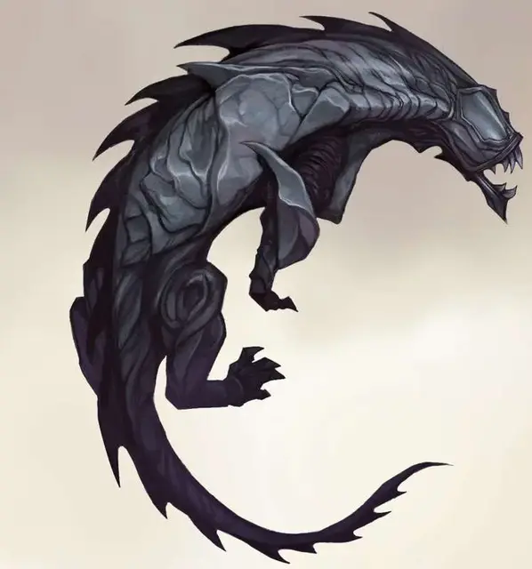

Стальной хищник
Steel Predator
Большой Конструкт, законно-злой

Класс Доспеха 20 (природный доспех)
Хиты 207 (18к10 + 108)
Скорость 40 футов
| мод | спас | ||
|---|---|---|---|
| СИЛ | 24 | +7 | +7 |
| ЛОВ | 17 | +3 | +3 |
| ТЕЛ | 22 | +6 | +6 |
| мод | спас | ||
|---|---|---|---|
| ИНТ | 4 | −3 | −3 |
| МДР | 14 | +2 | +2 |
| ХАР | 6 | −2 | −2 |
Сопротивление урону звук, некротическая энергия, холод, электричество
Иммунитет к урону психическая энергия, яд; дробящий, колющий, рубящий
Иммунитет к состояниям окаменение, отравление, паралич, очарование, испуг, ошеломление, истощение
Чувства слепое зрение 30 футов (фт.), тёмное зрение 60 футов (фт.), пассивное Восприятие 17
Языки понимает Модронский и языки своего создателя, но не говорит
Опасность 16 (15000 опыта)
Бонус мастерства +5
Среда обитания Город
Особенности
Врождённое колдовство. Базовой характеристикой стального хищника является Интеллект. Он может накладывать следующие заклинания, не нуждаясь в материальных компонентах:
• 3/день каждое: переносящая дверь (только на себя), уход в иной мир (только на себя);
Сопротивление магии. Стальной хищник совершает с преимуществом спасброски от заклинаний и прочих магических эффектов.
Магическое оружие. Атаки стального хищника являются магическими.
Действия
Мультиатака. Стальной хищник совершает три атаки: одну укусом и две когтями.
Укус. Рукопашная атака оружием: +12 к попаданию, досягаемость 5 фт., одна цель. Попадание: 14 (2к6 + 7) колющего урона.
Когти. Рукопашная атака оружием: +12 к попаданию, досягаемость 5 фт., одна цель. Попадание: 16 (2к8 + 7) рубящего урона.
Ошеломляющий рык (перезарядка 5-6). Стальной хищник издаёт рык 60-футовым конусом. Все существа в этой области должны преуспеть в спасброске Телосложения Сл 19. при провале, существо получает 27 (5к10) урона звуком, роняет все что держит, и становится ошеломлённой на 1 минуту. При успехе, существо получает половину урона. Ошеломлённое существо должно повторять спасбросок в конце каждого своего хода. При успехе эффект на цели заканчивается.
Описание
Стальной хищник – беспощадная машина с одной единственной задачей: обнаружить и убить свою цель, независимо от расстояния и препятствий.
Технология модронов. Стальные хищники созданы определённым гекстоном модронов, при помощи машины, расположенной в Сигиле. Однако она не всегда была расположена в Городе Дверей. В своём первоначальном доме – план Механуса, гениального гекстона восхваляли за его изобретения – пока он не обратил свои творения против своих вышестоящих лиц. Стальные хищники разрушали иерархию модронов до тех пор, пока гекстон-отступник не был пойман и не изгнан. Теперь он владеет магазином в Сигиле, где за высокую цену каждый может заказать себе стального хищника.
Убийцы по заказу. Чтобы создать стального хищника, машине гекстона нужно скормить то, что идентифицирует цель хищника, например, прядь волос, хорошо изношенную перчатку или многократно используемое оружие. Как только появляется новый изготовленный хищник, он сразу уходит в поисках своей добычи. Он чует местоположение своей цели даже через межпланарные границы, но такое обнаружение является точным только на расстоянии в тысячу ярдов; на более близкой дистанции стальной хищник ищет добычу при помощи зрения и обоняния. Вступив в сражение, хищник игнорирует любую другую угрозу и атакует свою добычу, пока другие существа не мешают ему достигнуть цели. В противном случае он делает то, что нужно, чтобы выполнить свою миссию.
Неразборчивые убийцы. Если всё идёт по плану и стальной хищник убивает свою цель, а затем добровольно возвращается в Сигил, где он разбирается на части, которые можно использовать в другом стальном хищнике. Однако, урон полученный в битве может привести к тому, что этот инстинкт откажет, заставив стального хищника задержаться в этой области, охотясь и убивая других существ, которые напоминают его добычу, соответствуют общему описанию цели или просто живут поблизости. Такие бродячие механизмы становятся самыми опасными из хищников.
Природа конструкта. Стальной хищник не нуждается в воздухе, пище, питье или сне.